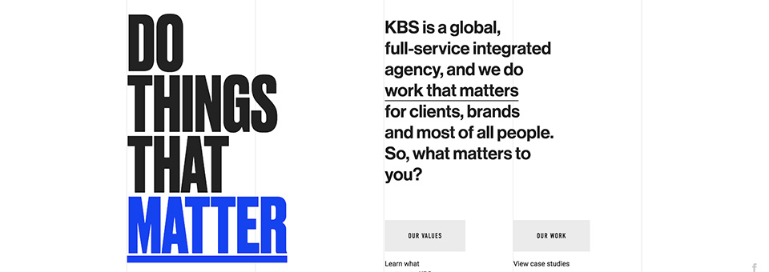
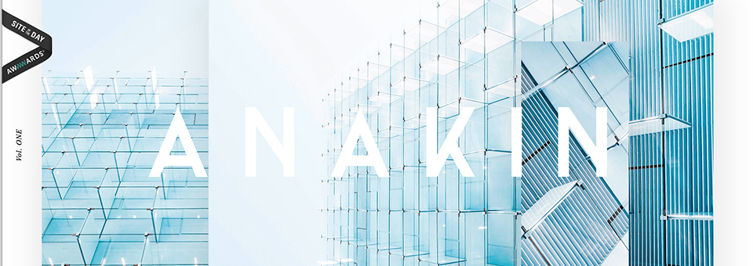
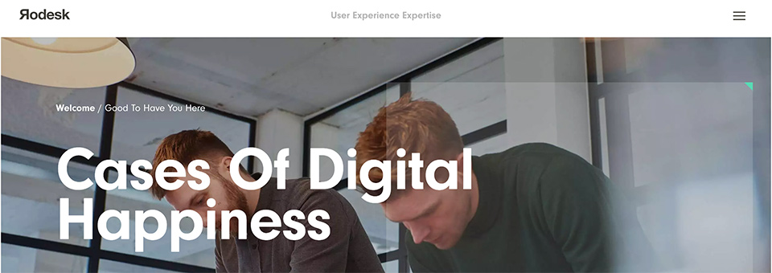
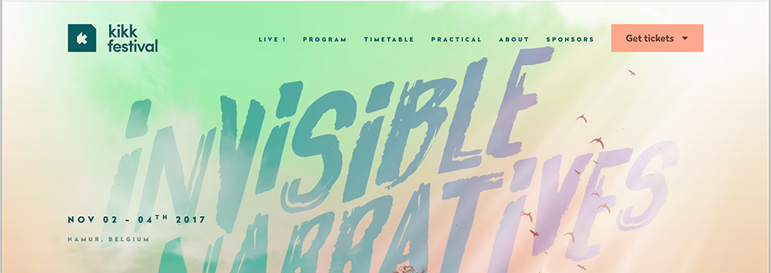
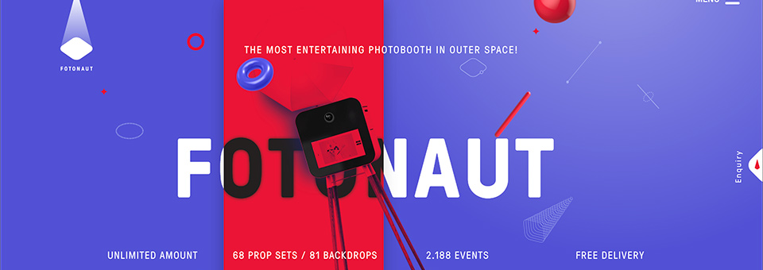
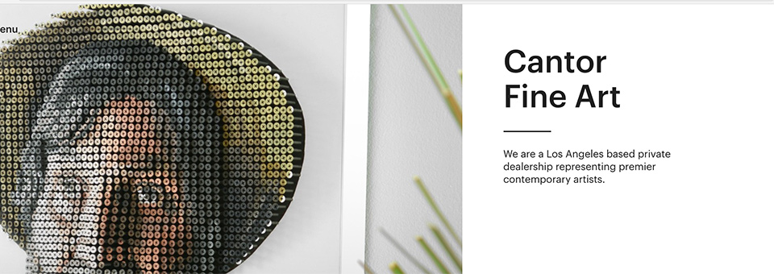
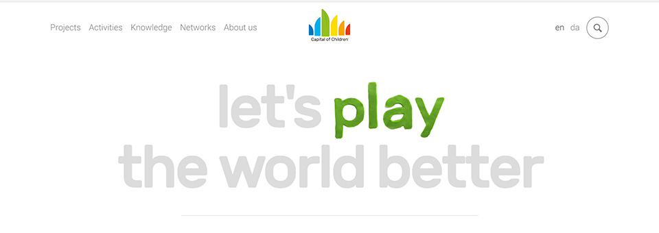
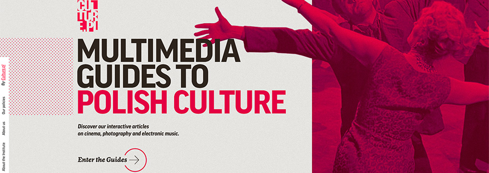
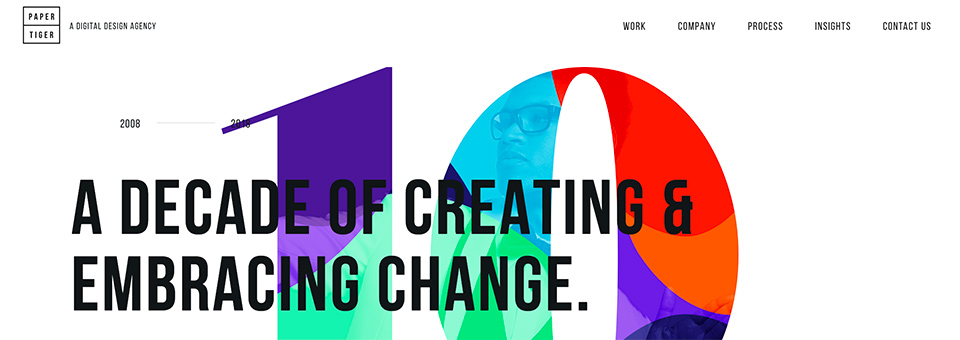
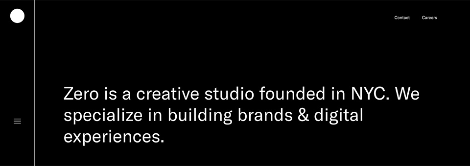

1. Do Things That Matter
Do Things That Matter is a site that promotes their company and showcases their work by providing case studies on the projects they do. This website is targeted towards future clients. This site was picked as apart of the ten best websites because the navigation is consistent and easy to use, once you learn the design it is easy to get around the site. The design is also satisfying to use because things move and there are animations as you scroll.There is repitition throughout the site with its use of color.
2. Anakin
Anakin is a site that informs people of their design company and promotes their work. They have samples of their work and provide examples of companies that they ahve worked with.This site is targeted towards young adults and future clients based on its fresh design This site was picked as a part of the ten best websites because the navigation is simple and scrolls down with the page. The site is pleasant to use and contains good content. The design is really nice to use and all of the colors are really nice to look at, which makes it easy on the eyes.
3. Rodesk
Rodesk is a site that promotes their company. This site is targeted at young adults because the design is modern and fresh, but still easy to use. It could also be targeted at people who are looking for jobs in the design field. Rodesk was picked as a part of the ten best websites because the navigation is consistent and easy to use. The design of th site is smooth and makes it simple to get around and you could easily come back and rememeber how to use it. They have good content that explains what their company is and give examples of their work. The colors bring emphasis, and the layout stays consistent throughout.
4. Kikk Festival
The Kikk Festival is a site that informs you of their festival, when it is, where it is, what it's about, and how to get tickets. This site could be targeted towards young adults to older adults, it has a big audience of people of many different cultuers who come together with many different talents. This site was picked as apart of the ten best websites because the navigation is easy ot use and has good intriguing content about their festival. The site also has an underwater theme that is consistent throughout the whole site, that has little animations that go with it.
5. Fotonaut
Fotonaut is a site that promotes their company and their product. This site is targeted towards young adults, because the design is very unique. This site is apart of the 10 best website because the navigation is easy to use, and you always have awarness of where you are. It contains good content about their company and product as a whole. Another big factor is the sites use of colors. The purple and red go well together in conveying a fun website, that represents what they do.
6. Cantor Fine art
Cantor Fine Art is a site to inform their viewers of their art shows, showcase some the work in their galllery, and sell their art. The target audience is most likely older people with a lot of money, because most of the art is very expensive. This site is apart of the ten best websites because their site is easy to use, the navigation is consistent, and it would be easy to come back to to use. The content on the site is interesting, and contains some good stories about some pieces of their art. The design itself is very clean.
7. Capital of Children
Capital of Children is a site to promote their organization to people. This site it mostly targeted towards people with children, looking to move to a good place where their children can grow up. This site is apart of the ten best websites because the sire is easy to use and has straight forward navigation. The site has good content that is informative about their organization, and their projects. The design is fun and colorful, each page is a different color corresponding to their logo, which really goes a long with the theme of the website.
8. Multimedia Guides to Polish Culture
Multimedia Guides to Polish Culture is a site to educate people on some areas of the polish culture. Based on the design of the site, I would say its more targeted towards young adults, who are intrested in art and history. This site was picked as a part of the ten best websites because the navigation is clear and shows you where you are going, has good content within each of the different articles, and has different colors to put emphasis on the different cultures. It is really fun to scroll through and learn about polish film-making, photography, and music.
9. Paper Tiger
Paper Tiger is a site to promote their design company. The site is targeted towards more young adults or future clients. This site is apart of the ten best websites because of the easy navigation and the smooth usability of the site. It is easy to preform tasks and it is a nice design to use. The provides good content and examples of their work.The design is nice and clean, with bursts of color which makes it fun.
10. Zero Studios
Zero Studios is a site to promote their company and show off their work. The site it targeted more towards young adults based on the dark design on the site. The site is apart of the ten best websites because of it's easy to use, yet unique navigation. It stays consistent throughout the whole site and is fixed to the side of the page. The design is really nice to use, with the black background apparent throughout the rest of the site. The site has a good content and a cool design feed to look at.
back to top